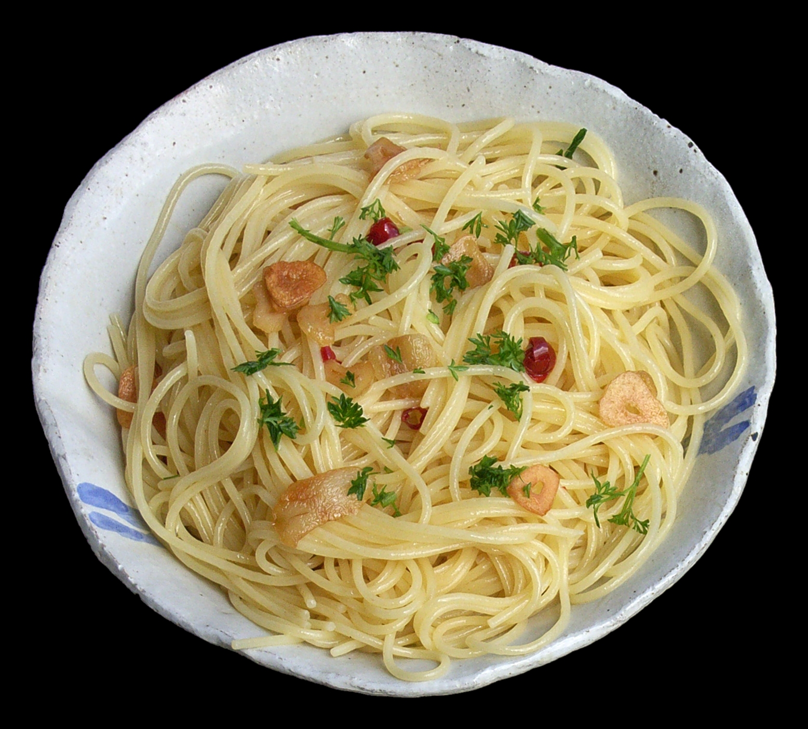

Spaghetti Aglio e olio

Description:
Spaghetti aglio e olio is a pasta dish typical of the Italian city of Naples.
It is a typical dish of Neapolitan cuisine and is widely popular.
Its popularity can be attributed to it being simple to prepare and the fact that it makes use of inexpensive,
readily available ingredients that have long shelf lives in a pantry.
The dish was once also known as vermicelli alla Borbonica or also as vermicelli con le vongole fujute, when in the white version.
Ingredients:
- Spaghetti
- Olive oil
- Garlic
- Crushed red pepper flakes
- Optional garnishes (finely-minced fresh parsley and/or freshly-grated Parmesan)
Steps:
-
Cook the spaghetti.
Cook the spaghetti in a generously-salted pot of boiling water until it is just one minute shy of being al dente.
-
Sauté the garlic.
Meanwhile, about 3 minutes after you add the pasta to the boiling water, heat the olive oil in a large sauté pan over medium heat.
Add the sliced garlic and crushed red pepper flakes and sauté for 3 to 5 minutes, or until the garlic is lightly golden.
-
Toss the pasta in the sauce.
Once the pasta is ready to go, use tongs to transfer the pasta immediately to the sauté pan,
along with 1/2 cup of the hot starchy pasta water. Toss the pasta continuously until it is evenly coated in the garlic sauce.
If the sauce looks a bit too dry, add in another 1/4 cup of the starchy pasta water.
-
Taste and season.
Give the pasta a quick taste add an extra pinch of salt and/or crushed red pepper flakes if needed.
-
Serve.
Serve immediately while it's nice and hot, garnished with any toppings that sound good.